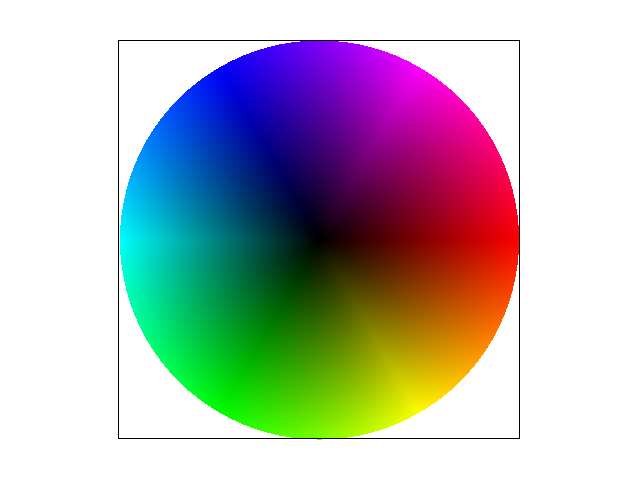
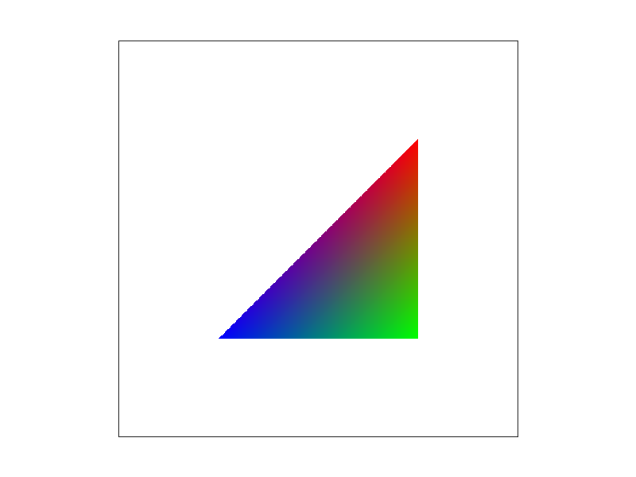
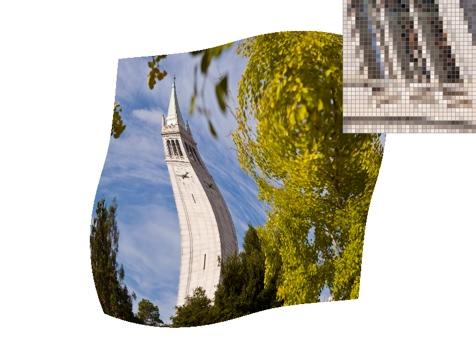
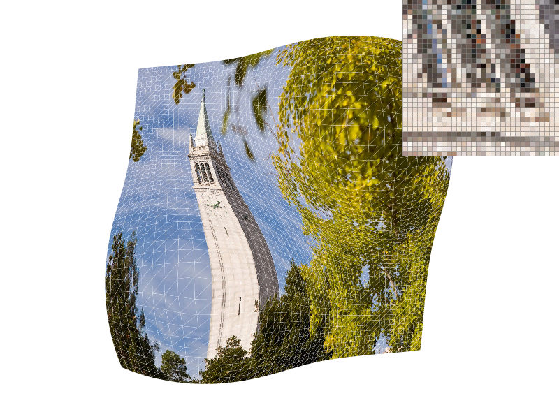
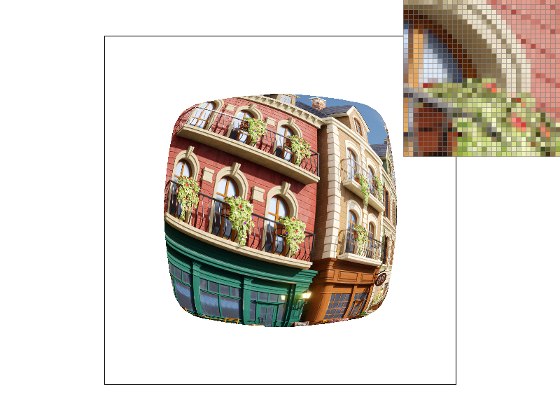
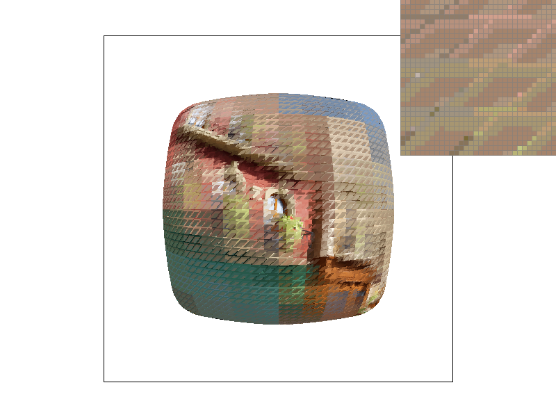
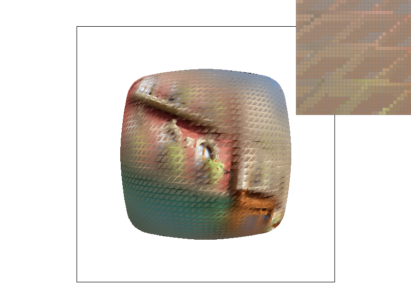

CS184/284A Spring 2025 Homework 1 Write-Up
Name: Clara Kim
Link to webpage: https://cal-cs184-student.github.io/hw-webpages-clarakim-hw1/
Link to GitHub repository: https://github.com/cal-cs184-student/hw-webpages-clarakim
Overview
Throughout the homework, I started off by doing simple point-in-triangle test to see if a single sample from a pixel is inside the triangle and rasterizing it, then worked on antialising by subdividing the pixel into smaller pixels, sampling more per pixel and coloring the pixel based on the average value. Then, transformation was implemented to work on making fun movements to a robot, and barycentric coordinates were implemented to color based on the weighted distance to vertices of a triangle. Lastly, texture mappings with pixel sampling and level sampling were implemented, adding depth and dimensions in the image renderings. As I was able to interact with my drawings with various hotkeys, zooming into various areas and adjusting the different settings, and as I was able to slowly integrate more complex and accurate (antialiased) versions of images, it was interesting to actively see the enhancements I was making, especially as I compared the outputs to the initial output.Task 1: Drawing Single-Color Triangles
My algorithm first computes the bounding box by finding the min & max of x & y vertices of the triangle, and then uses a nested for loop to check every pixel in the bounding box. Therefore, my algorithm is bounded by the size of the bounding box, and no worse than the algorithm that checks each sample within the bounding box of the triangle.After I found the bounding box coordinates, I rasterized my triangle by iterating over all the pixels within this bounding box, and then performing the point-in-triangle test (function) to see if the pixel's center (x+0.5, y+0.5) is inside the triangle. A point lies inside the triangle if it is inside all 3 lines; if it passes the test (as in, determined that it is inside the triangle), then I color in that pixel.
One problem I encountered was that I initially only checked the cases > 0 as the points inside the triangle, but found out that only roughly right side of the image was getting colored, so I found out that I had to also check if the point <=0.
Task 2: Antialiasing by Supersampling
Supersampling takes multiple (compared to a single sample from task 1) samples per pixel (given by sample_rate), and averages the results to blend in colors to make edges and transitions smoother. It is useful because it helps get rid of jaggies (aliasing) in images, such as the edges shown from task 1, which can occur from taking a single point per pixel from the center which may not be that accurate.For the algorithm, I divided up the pixel into sqrt(sample_rate) x sqrt(sample_rate subpixels), creating a double for loop per pixel by making the increment size 1 / sqrt(sample_rate). Then, I checked if this subpixel was inside the triangle, and counted the number of subpixels (count_inside) per pixel and stored the number into the sample_buffer. Later in the resolve_to_framebuffer(), the number of subpixels per pixel divided by the total number of subpixels per pixel (sample_rate) was calculated to find the average color for that pixel, and for the colors to be blended later on in this way. I had to multiply the size of the initial sample_buffer by the sample rate, to accomodate the larger number of subsamples.
Initially, I was finding the average color and calling fill_pixel for each pixel inside the for loop, but it led to renderings with dark or black edges (outline), which I struggled to resolve but I figured out that blending/averaging should only happen at the end.
To once again reiterate what I said in the beginning, supersampling antiliases triangels by taking multiple samples per pixel, to take the average value rather than a single value per pixel, making the edges smoother, and the individual pixels having a range of color help the image look more accurate (antialiased) when zoomed out.
Based on the 3 images below for test4.svg, we can see that when sample rate=1, it is doing the same thing as task 1 where it is sampling once per pixel, which is why the resulting image is the same as the previous task. There are a lot of jaggies, and all the pixels are colored in the same green or white (not colored). When sample rate increases to sample rate=4, we can observe that the lines look a lot smoother (especially noticeable for the red and purple), and the zoomed in corner shows lighter green colors which is due to the fact that 4 subsamples are being taken per pixel and the numbers are being averaged to create a blend of colors. Lastly, when the sample rate=16, the lines become even smoother than the previous, looking even more "blurry" for the zoomed in pixel.
Task 3: Transforms
For Transformations, I thought it would be very straightforward because I was able to reference the matrices on the slide, but my initial approach used matrix with by-element configuration (for instance, T[0][1]) and this did not render properly. When I just made the matrix in one line, it worked and I just followed the matrices from the slide. For rotation, I had to make sure to first convert the deg parameter into radians using the radians function.Then, I created my_robot.svg after I made a copy from the initial robot.svg, and started playing around with the numbers to make adjustments to different body parts.
Starting from the initially rendered robot, I made a waving gesture by adjusting the left arm, right arm, and the head. I adjusted the left arm joints by rotating + translating the lower joint upwards (the actual wave motion), and rotating + translating the upper joint downwards to create the bend in the arm. Then, I rotated + translated the right arm downwards to create a more natural stance, and finished with the head rotation + translation to make the robot seem more friendly :)
Task 4: Barycentric coordinates
Barycentric coordinates represents a point, in relation to the 3 vertices of a triangle, as a weighted sum based on the distance to each of the vertices. For a triangle with vertices A, B, and C, their weights (called the barycentric coordinates) are represented as alpha, beta, and gamma respectively. These weights sum to a value of 1 and the larger the weight, the point would be closest in location to that corresponding vertex and therefore have a more similar color to that vertex.To use the triangle I created (my_bary_gradient.svg) as a way to better explain this, we can see that the areas of the triangle closest to the bottom right vertex (green vertex) are green (or very close to green), and as you get closer to other vertices the areas turn more similar into the color of the nearest vertex (red, blue). In the middle, the area would be almost equally weighted by each of the vertices, so the colors blend together into a nearly black color.
For my implementation, I started off with my code from Supersampling, and used the equations from the slide to individually calculate the alpha, beta, and gamma (barycentric coordinates). After I found the barycentric coordinates for each of the sampled pixels, I weighted each of the vertex colors given from the parameters with these coordinates, and was able to add it to the sample buffer for the colors to be filled and blended together at the end. Because I started off with my working code from task 2, I did not have much difficulties for this part.
|

|

|
Task 5: "Pixel sampling" for texture mapping
Pixel sampling is the process of calculating the color of a pixel in a image, by mapping a texture onto a 3D surface. This is used because 2D textures are in discrete coordinates, and texture must be sampled to render the image at various resolutions.The first sampling method is Nearest Neighbor Sampling, which picks the color of the nearest pixel (texel) to the given texture coordinate. It is fast and simple, but can result in antialising (jaggies) when magnified. Within texture.cpp, I implemented this method by converting the uv coordinates (x and y) into texture coordinates, "rounding" it to int (discrete) pixel values. The texel value found based on these coordinates gives the nearest/closest pixel value.
The second sampling method is Bilinear Sampling, which takes the 4 nearest texels and finds the weighted average, interpolating the colors. It results in more smooth transitions between pixels, but takes longer due to the complexity. This method was implemented by finding the 4 nearest texels, which are the 4 corners (bottom left, bottom right, top left, top right) found with flooring the tx & ty, and then adding 1 to each of those values for the upper values. Then, the colors are found and blending weights are applied to perform interpolation.
When the 4 images are compared, we can see that the Nearest sampling at 1 sample per pixel gives the most blocky, jagged, and least accurate rendering. Nearest sampling at 16 samples per pixel is also very blocky because it still is taking only the nearest 1 sample value, but is slightly more detailed (the pixels have more different colors next to each other). The bilinear samplings both have more "blurred" and smoother transitions between the pixels due to its sampling methods, but sampling 16 per pixel gives more detailed texture representations in the finished rendering.
There would be the largest difference between these 4 types when areas of the image are zoomed in like I did, and when there are more details/changes/variations in the texture.
|
|

|
|

|

|
Task 6: "Level Sampling" with mipmaps for texture mapping
Level sampling computes and stores multiple versions (levels) of a texture at various resolutions, choosing the appropriate mipmap level to use in order to reduce aliasing and improve quality. Level 0 is at full resolution, and other levels are created with lower resolutions, then a level is sampled using Nearest Neighbor or Bilinear interpolation.Within texture.cpp, get_level was implemented for level selection, computed with square roots of sum of squares of duv, which was taken from the slides. Within rasterize.cpp, a (partial) derivative is how much a variable change while the other variable is held constant, so 2 more barycentric coordinates are calculated in the x and y directions, and then the texture coordinates are calculated. The struct sample parameters is implemented because texture levels need to be stored for level sampling and texture lookup.
Pixel sampling has the fastest speed and the lowest memory usage, but relatively worst antialiasing power.
Level sampling has the high memory usage for storing mipmap levels with better antialising quality but lower speed than pixel sampling.
Adjusting the number of samples per pixel (increasing it) would make the speed slower with very high memory usage, but would result in the best antialising quality out of the 3.
|
|

|
|

|

|